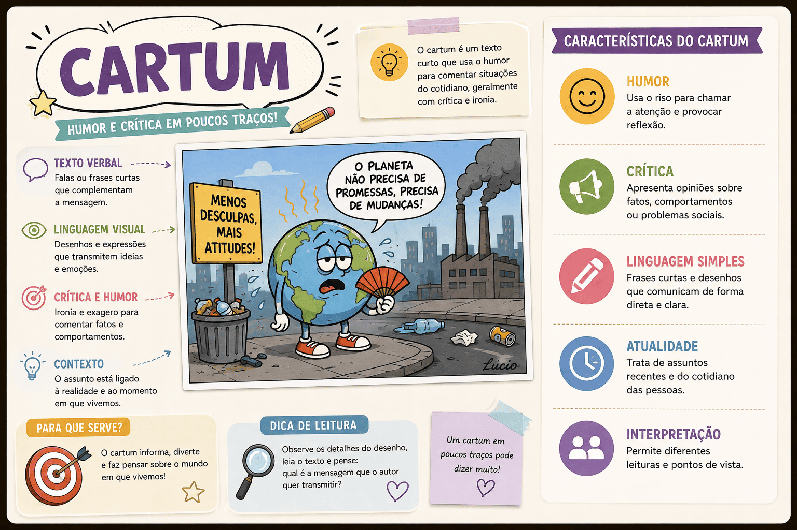

Cartum: O que é o Gênero Textual, Características e Diferença para Charge
Quando você abre o caderno de Linguagens do ENEM, é quase uma certeza matemática: você vai dar de cara com imagens, desenhos, falas em balões e muita ironia. Muitos alunos tremem na base quando precisam interpretar textos que não são feitos apenas de palavras. E no topo dessa lista de "gêneros visuais" está o cartum.
O cartum é uma forma de humor gráfico incrivelmente inteligente. Com apenas um quadro e, muitas vezes, nenhuma palavra escrita, ele consegue fazer o leitor rir e refletir sobre os comportamentos, os vícios e os absurdos da sociedade moderna.
No entanto, a grande "pegadinha" das provas de vestibulares não é apenas interpretar a imagem, mas sim saber diferenciar estruturalmente um cartum de uma charge ou de uma tirinha. Trocar esses conceitos pode custar pontos preciosos na prova.
Neste conteúdo, você vai aprender o que é o gênero textual cartum, quais são suas marcas registradas (como a atemporalidade), como interpretar a linguagem não verbal e a diferença definitiva entre ele e os outros gêneros humorísticos.

O que é o gênero textual Cartum?
O cartum (do inglês cartoon) é um gênero textual jornalístico e humorístico caracterizado por apresentar uma crítica, uma sátira ou uma reflexão sobre o comportamento humano e situações do dia a dia por meio de um único quadro ilustrado. Ele se utiliza da linguagem não verbal (desenho, expressões faciais, cores) e, frequentemente, da linguagem verbal (falas curtas, legendas) para construir o seu sentido.
Cartum é um texto de humor gráfico atemporal e universal, que satiriza os costumes, as relações humanas, a tecnologia e os vícios da sociedade sem fazer referência a uma pessoa ou fato histórico específico.
Quais são as principais características do Cartum?
Para que um desenho seja classificado como cartum, ele precisa obedecer a algumas regras estruturais e temáticas bem específicas. Veja as principais marcas desse gênero:
Marcas estruturais e temáticas
- Atemporalidade: É a alma do cartum. Ele trata de temas que nunca saem de moda: o vício em celular, a burocracia, a solidão, o casamento, a ganância. Um bom cartum feito em 1990 pode fazer total sentido hoje.
- Universalidade (Personagens Anônimos): O cartum não desenha pessoas reais ou famosas (como o Presidente da República ou um jogador de futebol). Ele usa "tipos" universais: o chefe, o náufrago na ilha deserta, o médico, o marido, o adolescente.
- Linguagem Mista: A fusão da linguagem verbal (palavras) com a linguagem não verbal (imagens). Muitas vezes, o cartum não tem nenhuma palavra escrita; a mensagem inteira está no traço do desenhista.
- Quadro Único: A piada ou a crítica acontece em um único painel. Não há sequência de ações em vários quadros.
- Humor e Ironia: O riso provocado pelo cartum não é ingênuo; é um riso reflexivo, gerado por uma quebra de expectativa ou pela ironia da situação.
É um texto sem palavras?
Para a Linguística, tudo aquilo que comunica uma mensagem e possui sentido completo é considerado um texto. Portanto, mesmo que um cartum tenha apenas um desenho (sem uma única letra), ele é um texto (não verbal) e deve ser lido, interpretado e analisado!
A Grande Pegadinha: Cartum x Charge x Tirinha
No ENEM, é proibido confundir esses três! Embora todos usem o humor gráfico, eles têm funções e estruturas completamente diferentes:
Cartum
Tema: Universal e comportamental.
Tempo: Atemporal (não envelhece).
Personagens: Pessoas comuns e anônimas.
Estrutura: Quadro único.
Charge
Tema: Um fato político ou social específico.
Tempo: Factual/Datado (perde a graça depois de alguns meses).
Personagens: Figuras públicas, políticos, celebridades.
Estrutura: Quadro único.
Tirinha
Tema: Variado (humor rotineiro ou crítico).
Tempo: Depende da história.
Personagens: Personagens fixos do autor (Ex: Mafalda, Turma da Mônica, Calvin).
Estrutura: Sequência narrativa (de 2 a 4 quadros).
Como interpretar Cartuns no ENEM?
Para não cair nas armadilhas de interpretação, siga estes passos ao analisar um cartum na prova:
- Leia a imagem (Não verbal): Observe a expressão facial das personagens. Estão felizes? Assustadas? Entediadas? Qual é o cenário?
- Leia o texto (Verbal): Se houver texto, relacione o que está escrito com a imagem. Geralmente, a ironia nasce da contradição entre o que se diz e o que se mostra.
- Identifique a crítica: Pergunte-se: "O que o autor está denunciando sobre o comportamento humano?" (O egoísmo? A dependência tecnológica? A desigualdade?).
Questão de aplicação
Questão: (Mestre Kira / Inédita) Considere um gênero textual humorístico, de quadro único, onde se vê o desenho de dois homens pré-históricos sentados em uma caverna. Um deles segura um pedaço de pau e diz para o outro: "A tecnologia está indo longe demais, estou sentindo falta de quando usávamos apenas pedras."
Com base na descrição temática e estrutural acima, esse texto classifica-se predominantemente como:
- Charge, pois critica abertamente as políticas tecnológicas de um governo recente.
- Tirinha, pois a fala dos homens pré-históricos cria uma narrativa sequencial que só se resolve no último quadro.
- Cartum, visto que utiliza um quadro único, com personagens anônimos, para fazer uma crítica atemporal e universal sobre a resistência humana aos avanços tecnológicos.
- Texto injuntivo, uma vez que a finalidade principal do autor é instruir o leitor sobre a fabricação de ferramentas na pré-história.
- Artigo de opinião, pois apresenta a defesa de uma tese por meio da linguagem estritamente verbal e denotativa.
Resolução
A alternativa correta é a 3 — Cartum, visto que utiliza um quadro único...
O texto descrito usa uma situação absurda (homens das cavernas reclamando da tecnologia de "pedaços de pau") para criticar um comportamento humano extremamente atual e universal: a tecnofobia (o medo ou resistência a novas tecnologias). Como a cena não retrata um político específico nem um fato do noticiário daquela semana, e possui apenas um quadro, trata-se inegavelmente de um cartum.
Resumo: O que você não pode esquecer sobre o Cartum
O cartum é uma piada visual inteligente sobre quem nós somos como sociedade.
- Estrutura: Apenas um quadro (painel).
- Linguagens: Verbal (palavras) e Não verbal (imagens). A imagem é obrigatória; o texto é opcional.
- Público e Tema: Universal. Serve para qualquer época (atemporal).
- Personagens: Tipos genéricos e anônimos da sociedade.
- Cuidado: Se o texto fizer piada com o prefeito da sua cidade, com o ministro da economia ou com uma notícia da semana, não é cartum. É charge!
Continue estudando Produção Textual e Gêneros Visuais
Referências
RAMOS, Paulo. A leitura dos quadrinhos. São Paulo: Contexto.
ROMUALDO, Edson Carlos. Charge jornalística: intertextualidade e polifonia. Maringá: Eduem.
Explore Outros Conteúdos
Continue seus estudos acessando outras seções do site Mestre Kira: